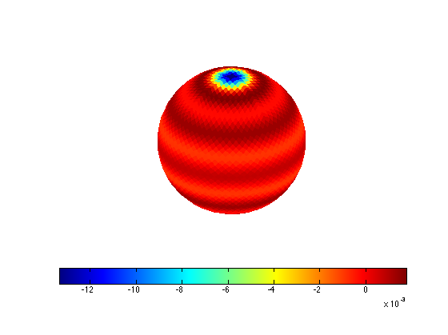

alm2pix
Evaluate function, expressed as spherical harmonic expansion coefficients, on HEALPix pixel centers
Contents
Syntax
v = alm2pix( nSide, alm, 'Param1', Value1, 'Param2', Value2, ...)
Input Arguments
nSide HEALPix resolution parameter (power of 2) alm Spherical harmonic expansion coefficients
Param Value 'lmax' max order of harmonic to calculate (default floor2*nSide/3) 'nest' (true | {false})
Return Arguments
v Function values at pixels in either ring or nest indexing
Example
Shows the gibbs-like error at the poles
nSide = 2^4; alm = pix2alm(ones(1,12*nSide^2)); v = alm2pix(nSide,alm); hp3d(v-1);
See also
pix2alm
Requires
ylm
Copyright 2010-2011 Lee Samuel Finn. Terms of Use.